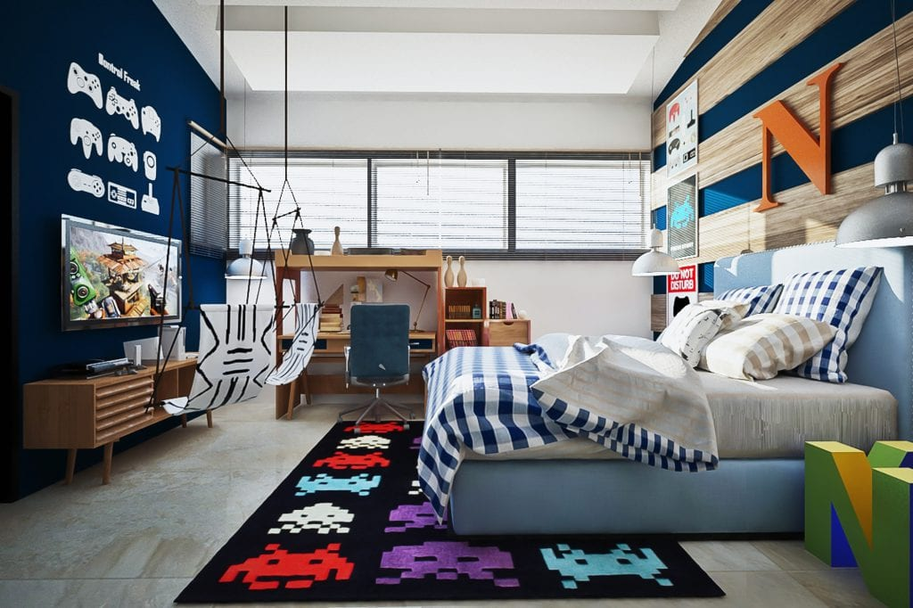

<!-- hold the values for now -->
<!-- social icons -->
<div class="row socials">   
		           <ul class="social-icon"> 
				   <li> <a href="#" target="_blank"> <i class="fa fa-instagram fa-2x"> </i> </a> </li>
				   <li> <a href="#" target="_blank"> <i class="fa fa-facebook-square fa-2x"> </i> </a> </li>
				   <li> <a href="#" target="_blank"> <i class="fa fa-linkedin-square fa-2x"> </i> </a> </li>
				   <li> <a href="#" target="_blank"> <i class="fa fa-twitter-square fa-2x"> </i> </a> </li>
				   </ul>
		  </div> 
		  <!-- body parts -->
		  <div class="container-fluid">
	   
		<div class="row"> 
		 
			<div  id="myCarous" class="carousel slide" data-ride="carousel" data-interval="2000" style="height:500px">
				<!-- absence of indicators -->
				 
				<!-- Wrapper for slides -->
				<div class="carousel-inner" role="listbox">
					<div class="item active">
						
					</div>

					<div class="item ">
						
					</div>
					
					<div class="item">
						
					</div>
					
			     </div> <!-- end of carousel inner -->
				 
	         </div>  
		</div>   <!-- end of first row  -->
		
		<div class="row"> </div>
	    </div> <!-- end of container class -->
	